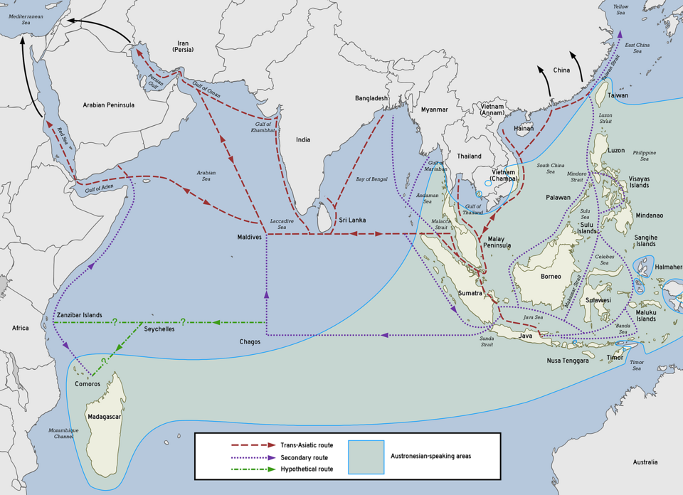

When analysing global supply chain risk, it is easy to view geopolitical conflicts in isolation. A skirmish in the Red Sea affects European shipping, while posturing in the South China Sea impacts Asian tech manufacturing.
However, global logistics is a singular, highly integrated machine. Like any critical system, it has primary points of failure. Right now, the global economy is balanced precariously on two distinct, yet deeply interconnected maritime chokepoints: the Taiwan Strait and the Strait of Hormuz.
Monitoring one without the other provides an incomplete picture of global market vulnerability.
The Silicon Chokepoint
The Taiwan Strait is the undisputed bottleneck for global compute. With Taiwan producing over 60% of the world's semiconductors and upwards of 90% of the most advanced chips, any kinetic disruption or blockade in these waters immediately fractures the tech, automotive, and defence supply chains. We track this daily on our primary Strait Risk Tracker.

The Energy Chokepoint
Conversely, the Middle East controls the energy required to power that manufacturing and logistics network. The Strait of Hormuz sees approximately 20% of the world's global oil consumption pass through it daily, alongside massive volumes of liquified natural gas (LNG).
The Compounding Fracture
The true risk to markets is not an isolated event in either strait, but the compounding effect of disruption.
If escalation in the Middle East spikes Brent Crude prices, the cost to manufacture energy intensive semiconductors and ship them globally skyrockets. This creates a supply side inflation shock. If tensions in the Taiwan Strait simultaneously limit chip availability, the resulting tech deficit stalls the very defence and manufacturing systems required to stabilise the first crisis.

It is a feedback loop of escalating costs and reduced capability.
Condition Monitoring for Global Trade
You cannot rely on breaking news to measure this risk; by the time the headlines hit, the market has already priced in the disruption. Effective risk management requires continuous condition monitoring of both regions to detect capital flight and rhetorical shifts before physical supply lines are cut.
Track the Energy Chokepoint
To provide a complete picture of this dual threat, we have launched a live data feed tracking the algorithmic conflict noise and market anxiety out of the Gulf.
View the Live Middle East Tracker